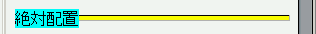
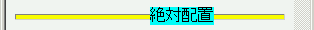

直後に背景色を指定したhr要素を持つ絶対配置要素では、leftプロパティを指定しないときの初期値が0にならない。 left:50%; を指定したときの位置に配置されてしまう。
<div style="position:absolute; background:aqua;">絶対配置</div> <hr style="background:yellow; height:6px;">
絶対配置した要素にはleftプロパティを指定していないので、左端に配置されるはずです。
Netscape7.1標準モード
WinIE6.0標準モード
leftプロパティの値を明示すれば正しい位置に配置されます。または、hr要素の背景を指定しないことで不具合を回避することができます。
WinIE6.0で不具合の発生を確認しました。